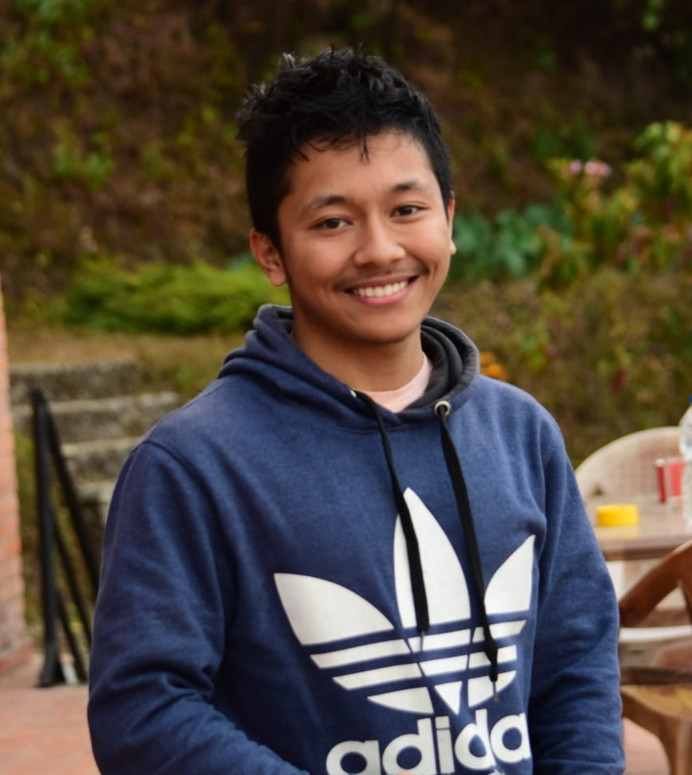

Portfolio · 2026
Who am I?
I'm an actuarial analyst based in Nepal, interested in helping you with any actuarial valuations. I like building things that are equal parts useful and a little handmade — this site included. I love football, going on long hikes, shot hikes, trekking, cooking and the simpler things in life. If you're a foreigner and wanting to trek in Nepal , please feel free to contact me! I studied actuarial science in my bachelors, and am pursuing a fellowship qualification form the Institute and facult of Actuaries.